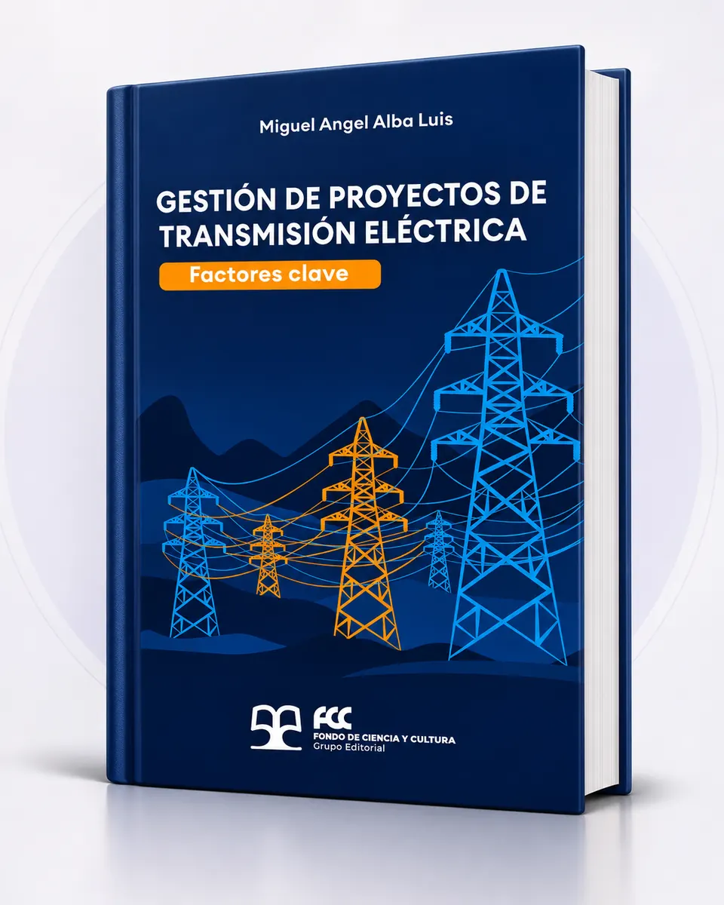

Gestiona Proyectos · Edición 7
Aprendizajes, recomendaciones y claves para la gestión de proyectos.
Leer revista : Gestiona Proyectos · Edición 7, PDF en una nueva pestaña
Una guía práctica para planificar, controlar y gestionar proyectos de transmisión eléctrica con mayor criterio.
Convierte la experiencia en decisiones mejor fundamentadas. Miguel Alba reúne más de 200 factores clave y casos prácticos aplicados a proyectos de líneas de transmisión y subestaciones.
Un enfoque aplicado a la planificación, el control y la gestión de riesgos en infraestructura eléctrica.
Directores de proyectos, ingenieros, equipos de planificación y control, profesionales de PMO y quienes quieren fortalecer su gestión de proyectos de transmisión.
Comprende su importancia estratégica y los desafíos de la infraestructura eléctrica.
Organiza el alcance, los plazos y los recursos con una visión integral.
Identifica factores críticos, anticipa cambios y mejora la toma de decisiones.
Lleva los aprendizajes a tu proyecto con ejemplos aplicados y sus resoluciones.
Una selección de temas para conocer su enfoque. Revisa la muestra para explorar el contenido.
Elige una edición y descubre ideas para tu siguiente proyecto. Todas las revistas están disponibles en PDF.
Aprendizajes, recomendaciones y claves para la gestión de proyectos.
Leer revista : Gestiona Proyectos · Edición 7, PDF en una nueva pestañaOficina de gestión de proyectos: PMO.
Leer revista : Gestiona Proyectos · Edición 6, PDF en una nueva pestañaControl de proyectos: seguimiento y toma de decisiones.
Leer revista : Gestiona Proyectos · Edición 5, PDF en una nueva pestañaGestión de riesgos en proyectos.
Leer revista : Gestiona Proyectos · Edición 4, PDF en una nueva pestañaLecciones aprendidas: convierte la experiencia en conocimiento.
Leer revista : Gestiona Proyectos · Edición 3, PDF en una nueva pestañaGestión de cambios en los proyectos.
Leer revista : Gestiona Proyectos · Edición 2, PDF en una nueva pestañaFactores críticos para un proyecto exitoso.
Leer revista : Gestiona Proyectos · Edición 1, PDF en una nueva pestaña